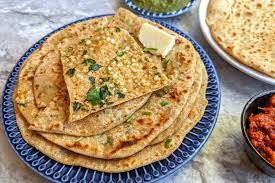

Paneer Paratha Recipe

Description:
Paneer Paratha is a delicious and filling Indian flatbread made with fresh cottage cheese (paneer) and a blend of spices. It's a popular choice for breakfast, lunch, or dinner and is loved by people of all ages. The warm and soft parathas stuffed with spiced paneer make for a wholesome and flavorful meal. Paneer Parathas can be served with various accompaniments such as yogurt, pickle, or chutney.
The rich and creamy texture of the paneer complements the whole wheat crust, creating a delightful contrast of flavors and textures. Whether you savor it on a lazy Sunday morning with a cup of hot chai or as a quick weeknight dinner, Paneer Paratha never fails to satisfy your taste buds and leave you craving for more.
Ingredients:
- Whole wheat flour (atta)
- Fresh paneer (cottage cheese)
- Onions
- Green chilies
- Fresh coriander leaves
- Garam masala
- Red chili powder
- Turmeric powder
- Salt
- Oil or ghee
Steps to Make Paneer Paratha:
- Prepare the stuffing: Grate the fresh paneer and finely chop onions, green chilies, and fresh coriander leaves. Mix them together and add garam masala, red chili powder, turmeric powder, and salt. Create a well-mixed stuffing mixture.
- Make the dough: In a separate bowl, take whole wheat flour, add a pinch of salt, and enough water to form a soft, pliable dough. Divide it into small balls, slightly larger than a golf ball.
- Roll the dough: Take one dough ball, flatten it, and create a small well in the center. Place a portion of the paneer mixture inside. Seal the edges and roll it into a round paratha, using a rolling pin and some flour to prevent sticking.
- Cook the paratha: Heat a griddle (tava) or a non-stick pan. Place the rolled paratha on it and cook both sides, applying oil or ghee, until they turn golden brown and crisp.
- Serve hot: Paneer Parathas are best enjoyed when hot and crispy. Serve with yogurt, pickle, or chutney of your choice.